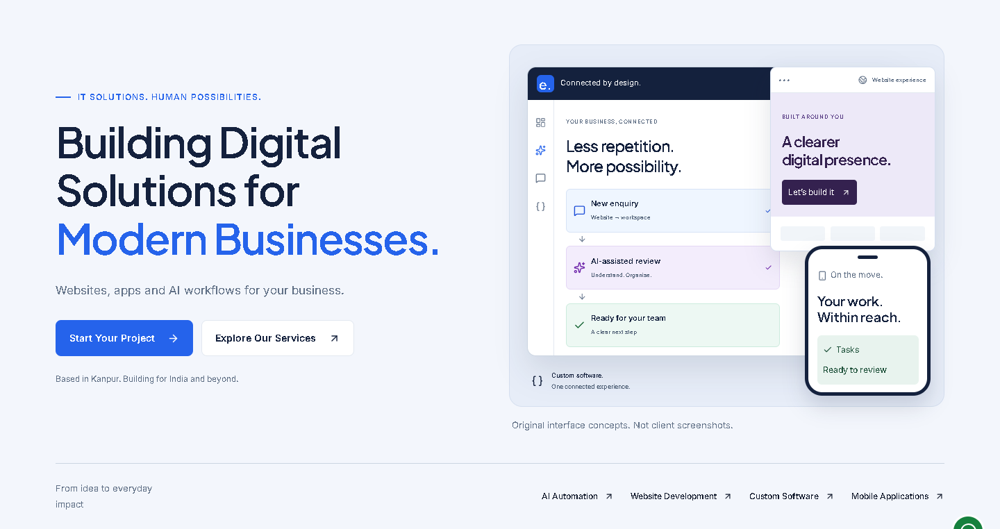
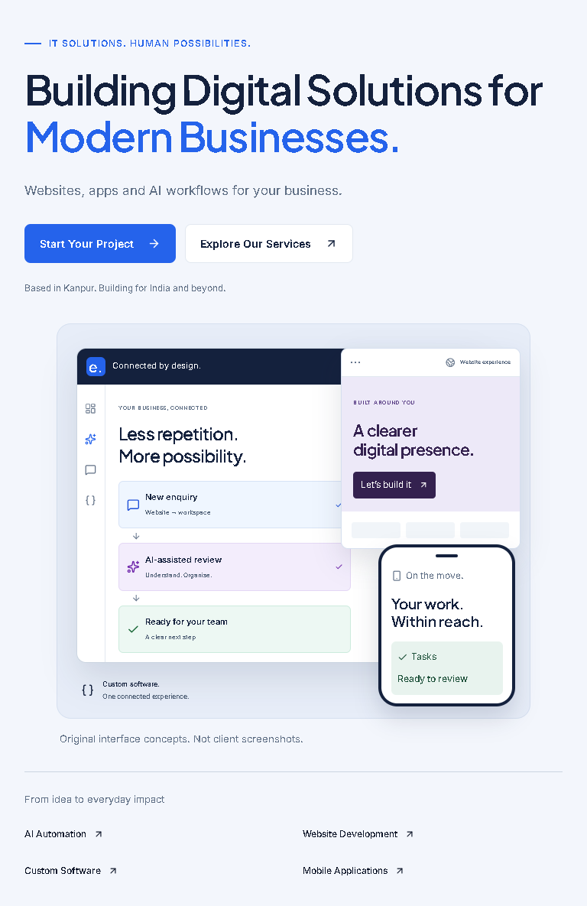
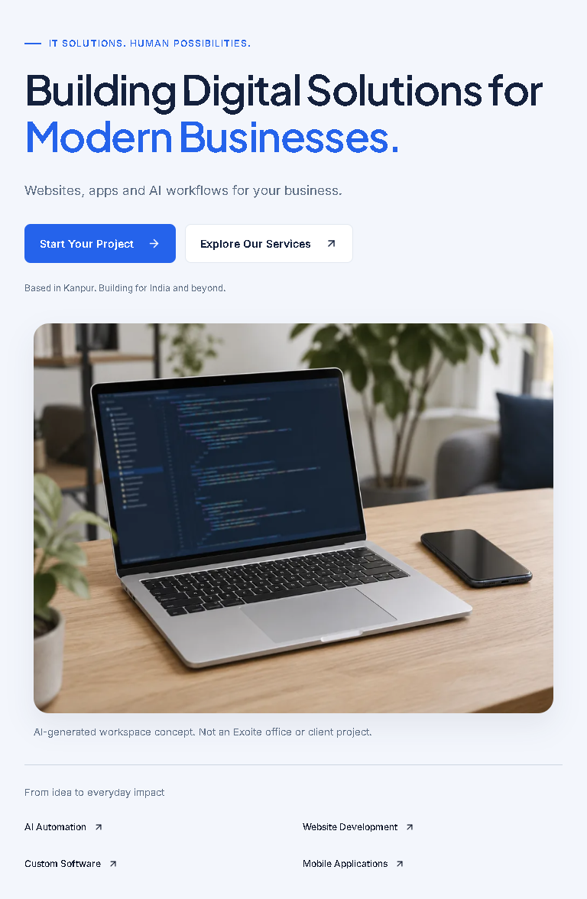

Homepage hero: before and after
Actual local production-preview renders in installed Google Chrome. Only the homepage hero changed. The new artwork is an AI-generated workspace concept, not an Exoite office or completed project.
Verification reportImage source and generation promptBrowser results
1440px desktop



Before opening viewportAfter opening viewportBefore full homepageAfter full homepage


768px tablet




Before opening viewportAfter opening viewportBefore full homepageAfter full homepage


390px mobile


Before opening viewportAfter opening viewportBefore full homepageAfter full homepage
Screenshots have not been retouched. Reduced motion was enabled for consistent captures. Click an image for its original PNG. Viewport height: 900px; screenshot device scale: 1.